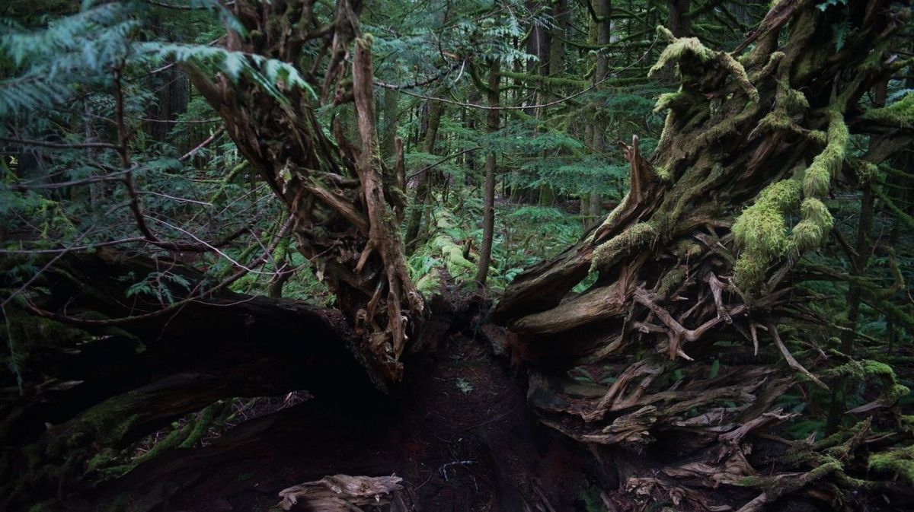
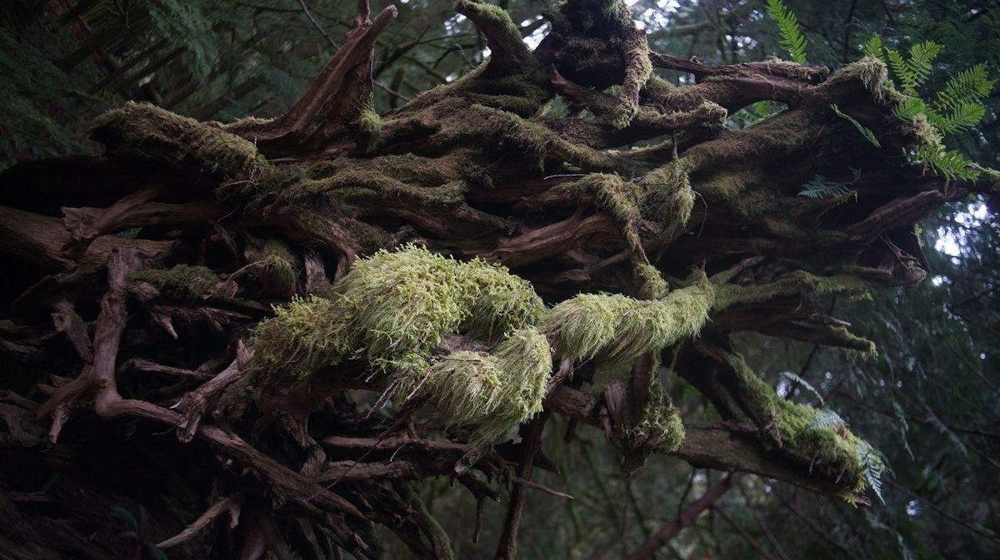
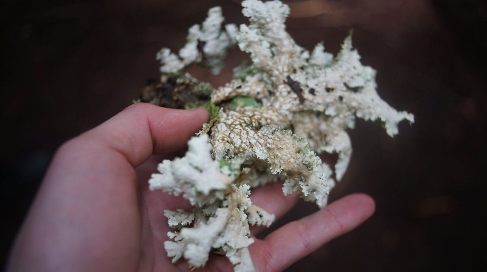
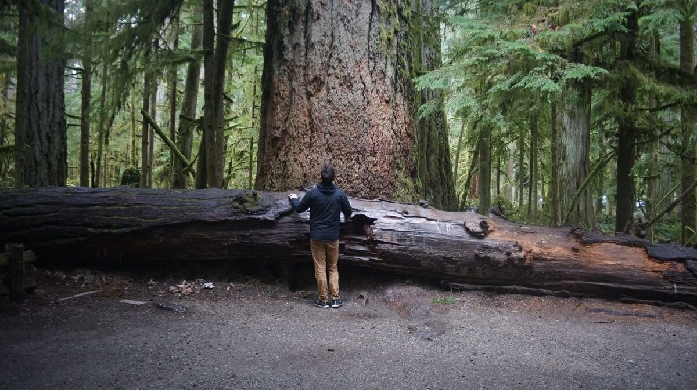

cathedral grove
Cathedral Grove, Vancouver Island
2022.04.13
What we refer to on this page as Cathedral Grove is on the traditional, stolen, unceded land of the Tseshaht and Snaw-naw-as First Nations people, and the K’ómoks nation.
On a very grey day, we went on a non-boating adventure with our friend Hellien. We took a trip north and went to visit some giant fir trees in Cathedral Grove.
Some of the trees we met there were more than 800 years old, and 9 metres (30 ft) in circumference, not enough for the three of us to encircle hand to hand. We stood in a primeval forest, with sword ferns on the ground and witch's hair moss covering everything else.
Standing here amongst these trees made us both happy, and sad, happy because these trees are still here but sad because there used to be many more. 80 to 90 percent of logging in BC is for exports—is creating roughly 250,000 hectares of new clearcuts each year. A bird's eye view of the country shows bald spots on land, harvested strategically so that this decimation isn't visible from the water, or from the roads. To make matters worse, the wood pellet industry is growing and they are no longer just using byproducts of logging to produce them, they are felling whole trees to satisfy demand. Wood pellets from Canadian forests are burnt in electrical power plants overseas, so that countries in Europe can falsely declare themselves green.
Humans have the power to impact forests, but so does nature. We saw a lot of downed giant trees, a result of the last great windstorm that struck the area in 1997. Qualicum, or Xwkwa’luxwum in Pentlatch language, are a type of local wind system. Every 20 to 40 years or so, a very strong Qualicum blows through the area, obliterating the landscape.
Now many old trees are laying over their sides, resting, while providing local insects, birds and other small animals with nutrients and shelter. The area is carefully managed, to let trees lie undisturbed. On the north side an elevated path was built so that human feet would not disturb the ground.
Most of the trees were covered in green moss, making them look thick and fuzzy.
We saw many varieties of moss, like witch's hair (alectoria sarmentosa) and sphagnum moss. Moss has the ability to store up to 25 times its dried weight in water, it helps to keep the ground and trees moist, and cool.
We also found lots of species of lichen, like lettuce lichen (lobaria oregana). Lettuce lichen loves to grow on Douglas Fir trees. Lichens get their food from the air, and because they rely on the atmosphere for all of their nutrients, they can grow almost anywhere.
Each lichen has a preference for how clean the air needs to be, and this is used as a biomonitor, a tool for measuring air quality. They also act as air scrubbers, trapping particulate matter in the air like dust while absorbing small pollutants.
All parts of a forest play a role. In Cathedral Grove humans are allowed to visit, but that is the only way we're allowed to participate.
Thank you trees, ferns, mosses and all, to have shared your home with us for a day.
